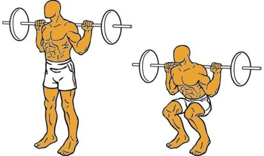
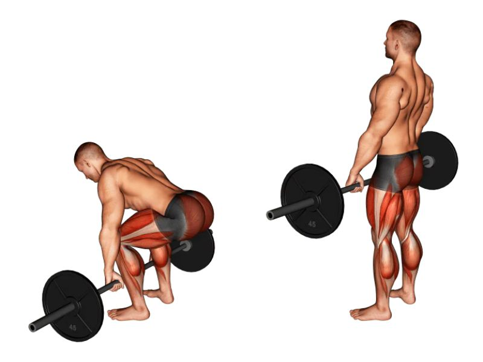

GymFit: Supera tus límites
Los Tres Grandes (TBig Three)
Dominar estos tres levantamientos compuestos es la base para construir fuerza bruta y masa muscular. La técnica siempre debe preceder a la carga.
1. Sentadilla Tras Nuca (Back Squat)

Fases de una Sentadilla High-Bar correcta
Puntos clave:
- Mantén el pecho arriba y la mirada al frente.
- Rompe desde las caderas primero, no desde las rodillas.
- Asegúrate de que tus rodillas sigan la línea de tus pies (hacia afuera).
- Desciende hasta que tus muslos rompan el paralelo con el suelo.
2. Press de Banca (Bench Press)
 Anatomía clave en el Press de Banca
Anatomía clave en el Press de Banca
Puntos clave:
- Retracción escapular: junta los omóplatos contra el banco.
- Leg drive: planta los pies firmemente y empuja contra el suelo.
- Baja la barra al nivel del esternón, manteniendo los codos a un ángulo de ~45 grados.
3. Peso Muerto (Deadlift)

Secuencia de un peso muerto convencional
Puntos clave:
- La barra debe iniciar sobre la mitad de tu pie (mid-foot).
- Agarra la barra y "saca pecho" para enderezar la espalda (neutral spine).
- El movimiento es un empuje con las piernas contra el suelo, no un tirón con la espalda baja.
- Bloquea apretando los glúteos en la parte superior.